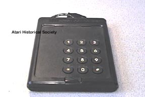

The Atari Kids
Controller Prototype

Before changing its color to a more kid-friendly BLUE, the original kids
controllers were standard Atari 2600 black like most of its other peripherals,
this is Pilot-Run #28. It is fully functional and has all the
same mechanics as the production released kids controllers, the only thing
missing are the underside arrows pointing to which direction to wrap the
connection cord around the storage holder.